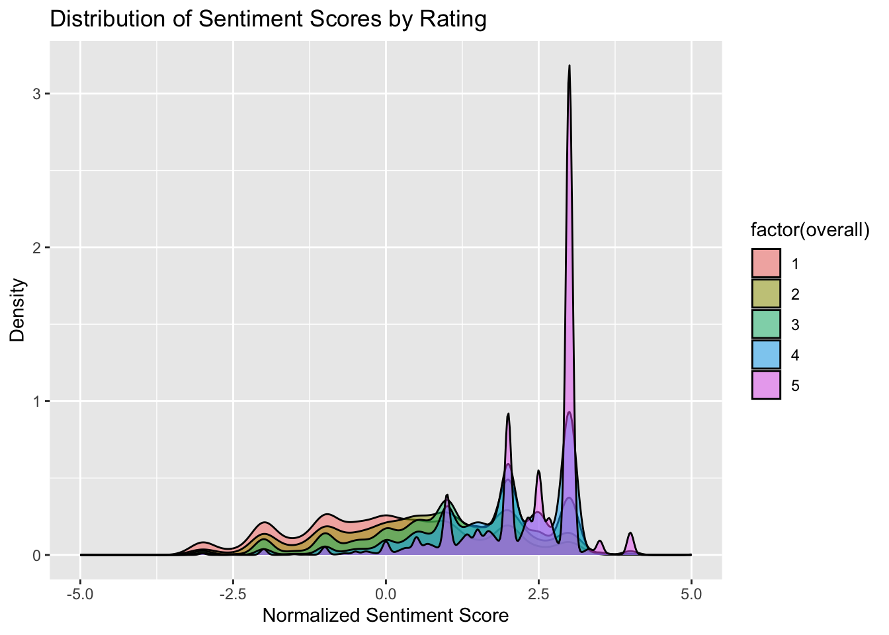
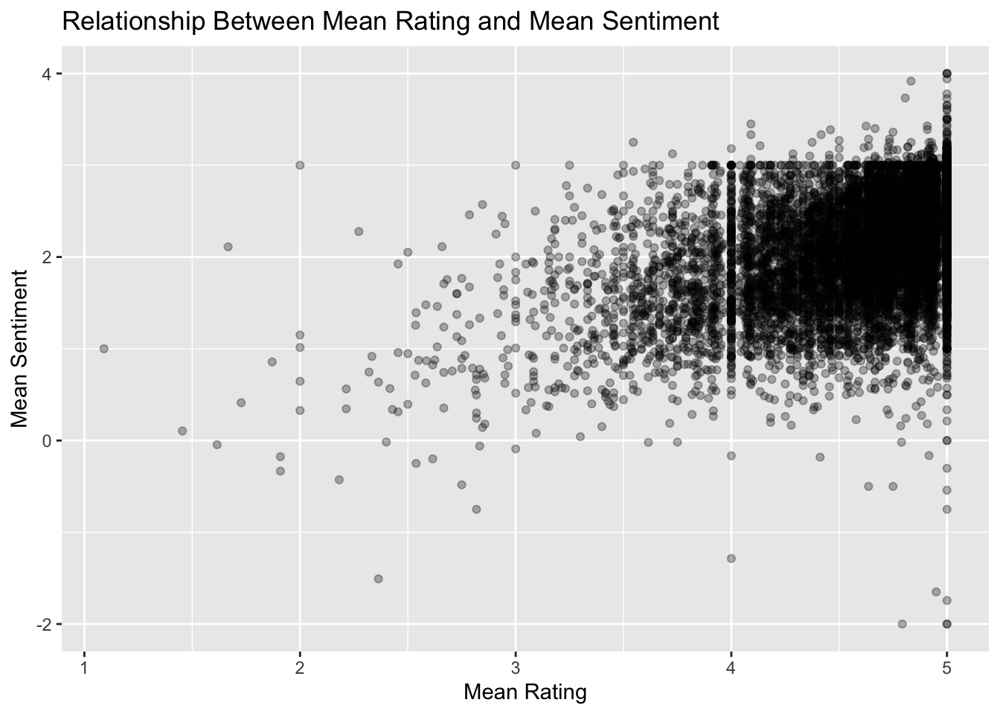

library(tidytext)
library(jsonlite)
library(dplyr)
library(tidyr)
library(readr)
library(ggplot2)
library(stringr)Lab 8: Text Mining and NLP
Overview
In this lab, we will use tidy text techniques to analyze a dataset of amazon reviews. Each problem utilizes the tidy text mining techniques described in either chapter 2 (Problem 1), chapter 3 (Problem 2), or chapter 4 (Problem 3) of the tidy text mining with r textbook. Note: the dataset for this assignment is a bit bigger than what we have typically worked with in the class. On my computer everything worked fast enough, but if your computer is older and you find the computations intolerably slow you may reduce the size of the dataset by 90% by taking only the first 10% of reviews. If you do this make sure it is clearly stated. I have also listed a second shorter version of the file.
Problem 1: Sentiment and Review Score
- Download “simple_reviews.json” from the following google drive link: https://drive.google.com/drive/folders/1bk_2ihR5gQ8k6Tkn0NNpB58K1efruKnX?usp=sharing, read it into R, and rectangle it so that it is a dataframe where each row contains a single amazon review. If this file is too large, click here to download a shorter version where 90% of the reviews have been dropped].
json_string <- read_file("simple_reviews.json")
simple_reviews <- fromJSON(json_string)
str(simple_reviews)'data.frame': 494485 obs. of 5 variables:
$ overall : int 4 5 4 5 5 5 5 4 5 5 ...
$ verified : logi TRUE TRUE TRUE TRUE TRUE TRUE ...
$ reviewerID: chr "AIE8N9U317ZBM" "A3ECOW0TWLH9V6" "A278N8QX9TY2OS" "A123W8HIK76XCN" ...
$ asin : chr "0449819906" "0449819906" "0449819906" "0449819906" ...
$ reviewText: chr "Contains some interesting stitches." "I'm a fairly experienced knitter of the one-color or color block intarsia vein, rather than a Fair Isle maestro"| __truncated__ "Great book but the index is terrible. Had to write and high light my own cross ref info." "I purchased the Kindle edition which is incredibly handy, particularly when traveling. Melissa Leapman is alwa"| __truncated__ ...- To make sentiment analysis possible, add an index variable to the review data frame so that each review is uniquely identified by an integer. Then tokenize the review data frame using words as the tokens, and remove all stop words from the data set.
tokenized_reviews <- simple_reviews %>%
mutate(index_id = row_number()) %>%
unnest_tokens(word, reviewText) %>%
anti_join(get_stopwords(), by = "word")
head(tokenized_reviews) overall verified reviewerID asin index_id word
1 4 TRUE AIE8N9U317ZBM 0449819906 1 contains
2 4 TRUE AIE8N9U317ZBM 0449819906 1 interesting
3 4 TRUE AIE8N9U317ZBM 0449819906 1 stitches
4 5 TRUE A3ECOW0TWLH9V6 0449819906 2 fairly
5 5 TRUE A3ECOW0TWLH9V6 0449819906 2 experienced
6 5 TRUE A3ECOW0TWLH9V6 0449819906 2 knitter- Does sentiment correlate with reviews? Use the
afinnlexicon to calculate a sentiment score for each review, normalizing by the number of lexicon words in each review. Visualize the distribution of sentiment scores for each rating and calculate the mean sentiment score for each review category. What do you observe?
afinn_sentiment <- tokenized_reviews %>%
inner_join(get_sentiments("afinn"), by = "word") %>%
group_by(index_id) %>%
summarise(sentiment = sum(value),
word_count = n()) %>%
mutate(normalized_sentiment = sentiment / word_count)
tokenized_reviews_sentiment <- tokenized_reviews %>%
distinct(index_id, .keep_all = TRUE) %>%
left_join(afinn_sentiment, by = "index_id")
ggplot(tokenized_reviews_sentiment, aes(x = normalized_sentiment, fill = factor(overall))) +
geom_density(alpha = 0.5) +
labs(title = "Distribution of Sentiment Scores by Rating",
x = "Normalized Sentiment Score",
y = "Density")
mean_sentiment_by_rating <- tokenized_reviews_sentiment %>%
group_by(overall) %>%
summarise(mean_sentiment = mean(normalized_sentiment, na.rm = TRUE))
mean_sentiment_by_rating# A tibble: 5 × 2
overall mean_sentiment
<int> <dbl>
1 1 -0.0169
2 2 0.580
3 3 1.15
4 4 1.85
5 5 2.32 - Reviewer Personalities: For each reviewer, compute the number of ratings, the mean sentiment, and the mean review score. Filter for reviewers who have written more than 10 reviews, and plot the relationship between mean rating and mean sentiment. What do you observe?
reviewer_personality <- tokenized_reviews_sentiment %>%
group_by(reviewerID) %>%
summarize(
num_reviews = n(),
mean_sentiment = mean(normalized_sentiment, na.rm = TRUE),
mean_rating = mean(overall, na.rm = TRUE)
) %>%
filter(num_reviews > 10)
ggplot(reviewer_personality, aes(x = mean_rating, y = mean_sentiment)) +
geom_point(alpha = 0.3) +
labs(title = "Relationship Between Mean Rating and Mean Sentiment",
x = "Mean Rating",
y = "Mean Sentiment") 
I notice that there are many more ratings of 3.5 or higher compared to those under 3.5. Additionally, 5-star ratings show a wide range of sentiment scores, and ratings between 1.6 and 5 can still express negative sentiments. It’s possible that reviewers who have written more than 10 reviews have higher expectations for products, allowing them to give high ratings while still expressing disappointment or a desire for improvement. Alternatively, some 5-star reviews may include negative sentiment, such as someone sharing a health issue and how a supplement helped with recovery. I’m also surprised by the low number of low reviews, as I would expect people to leave reviews more often after a bad experience, which makes me curious about why there are so few low ratings.
Problem 2: Words with high relative frequency
- As your starting point, take the tokenized data frame that has been filtered to remove stop words, but hasn’t been joined with the sentiment lexicon data. For each item (
asin), use thebind_tf_idffunction to find the word that occurs in the reviews of that item with the highest frequency relative to the frequency of words in the entire review test dataset.
tf_idf_reviews <- tokenized_reviews %>%
count(asin, word, sort = TRUE) %>%
bind_tf_idf(word, asin, n) %>%
arrange(desc(tf_idf))
head(tf_idf_reviews) asin word n tf idf tf_idf
1 B0015S35JY willbuy 1 0.25 9.347098 2.336774
2 B0013DF2BK searching 2 0.50 4.162509 2.081255
3 B001144YJ2 cute 1 1.00 1.943732 1.943732
4 B00G064Y0K lace 5 0.50 3.792202 1.896101
5 B008DWIWGQ loved 1 1.00 1.886607 1.886607
6 B00BINNH12 ok 6 1.00 1.735503 1.735503top_words <- tf_idf_reviews %>%
group_by(asin) %>%
slice_max(tf_idf, n = 1, with_ties = FALSE) %>%
ungroup()- Select five items from the dataset (either at random or by hand) and look up the
asincode for those items on Amazon.com. In each of these cases, does the highest relative frequency word correspond to the identify or type of the item that you chose? You may not be able to find every single item, but I was able to find a solid majority of the ones I searched for by searching amazon.com for theasin.
set.seed(5538)
selected_5 <- top_words %>%
sample_n(5)
print(selected_5)# A tibble: 5 × 6
asin word n tf idf tf_idf
<chr> <chr> <int> <dbl> <dbl> <dbl>
1 B00114PUOK linens 1 0.0769 6.78 0.522
2 B01A88YZ72 stamp 8 0.0430 2.80 0.121
3 B00GK5SPVK earrings 5 0.0725 3.39 0.246
4 B00FFVYK78 stickers 9 0.0441 3.66 0.162
5 B003WOW2IY elastic 14 0.1 4.15 0.415I was able to find three of the five items on Amazon through searching by ASIN. All three items: linens, earrings, and elastic, were easily identifiable by their identical top words. This was an interesting exercise. I enjoy opportunities to interact with data in searchable databases—it feels similar to web scraping, where you engage with web content in a more developer-focused context.
Problem 3: Bigrams and Sentiment
- Consider the two negative words
notanddon't. Starting from the original dataset, tokenize the data into bigrams. Then calculate the frequency of bigrams that start with eithernotordon't. What are the 10 most common words occurring afternotand afterdon't? What are their sentiment values according to theafinnlexicon?
bigrams <- simple_reviews %>%
unnest_tokens(bigram, reviewText, token = "ngrams", n = 2) %>%
filter(!is.na(bigram))bigrams %>%
count(bigram, sort = TRUE)bigrams_sample <- bigrams %>%
sample_frac(0.5)bigrams_filtered <- bigrams_sample %>%
separate(bigram, into = c("word1", "word2"), sep = " ") %>%
filter(word1 %in% c("not", "don't"))bigrams_filtered %>%
count(word1, word2, sort = TRUE)afinn_words <- get_sentiments("afinn")$word
top_bigrams <- bigrams_filtered %>%
filter(word2 %in% afinn_words) %>%
count(word1, word2, sort = TRUE) %>%
slice_head(n = 10)
top_bigrams word1 word2 n
1 don't want 689
2 don't like 637
3 not like 539
4 not worth 463
5 not recommend 452
6 not good 331
7 not fit 319
8 not cut 279
9 not bad 248
10 not happy 245bigram_sentiment <- top_bigrams %>%
inner_join(get_sentiments("afinn"), by = c("word2" = "word"))
bigram_sentiment word1 word2 n value
1 don't want 689 1
2 don't like 637 2
3 not like 539 2
4 not worth 463 2
5 not recommend 452 2
6 not good 331 3
7 not fit 319 1
8 not cut 279 -1
9 not bad 248 -3
10 not happy 245 3bigram_sentiment %>%
arrange(word1, desc(n)) %>%
select(word1, word2, n, value) word1 word2 n value
1 don't want 689 1
2 don't like 637 2
3 not like 539 2
4 not worth 463 2
5 not recommend 452 2
6 not good 331 3
7 not fit 319 1
8 not cut 279 -1
9 not bad 248 -3
10 not happy 245 3- Pick the most commonly occurring bigram where the first word is
notordon'tand theafinnsentiment of the second word is 2 or greater. Compute the mean rating of the reviews containing this bigram. How do they compare the average review score over the entire dataset?
negation_words <- c("not", "don't")
bigrams_filtered2 <- bigrams_filtered %>%
filter(word1 %in% negation_words) %>%
inner_join(get_sentiments("afinn"), by = c("word2" = "word")) %>%
filter(value >= 2)
top_bigram2 <- bigrams_filtered2 %>%
count(word1, word2, sort = TRUE) %>%
slice_max(n, n = 1)
top_bigram2 word1 word2 n
1 don't like 637top_word1 <- top_bigram2$word1
top_word2 <- top_bigram2$word2
reviews_with_top_bigram <- simple_reviews %>%
filter(str_detect(reviewText, paste(top_word1, top_word2, sep = " ")))
mean_rating_bigram <- mean(reviews_with_top_bigram$overall, na.rm = TRUE)
mean_rating_all <- mean(simple_reviews$overall, na.rm = TRUE)
mean_rating_bigram[1] 3.720892mean_rating_all[1] 4.566852The top bigram starting with the word “don’t” or “not” with the second word in the AFINN database and having a sentiment value of 2 or greater is “don’t like”. The average rating for reviews containing this bigram is 3.72, which is lower than the overall average rating of 4.57. This indicates that reviews mentioning “don’t like” tend to have slightly more negative ratings compared to the general review data set.